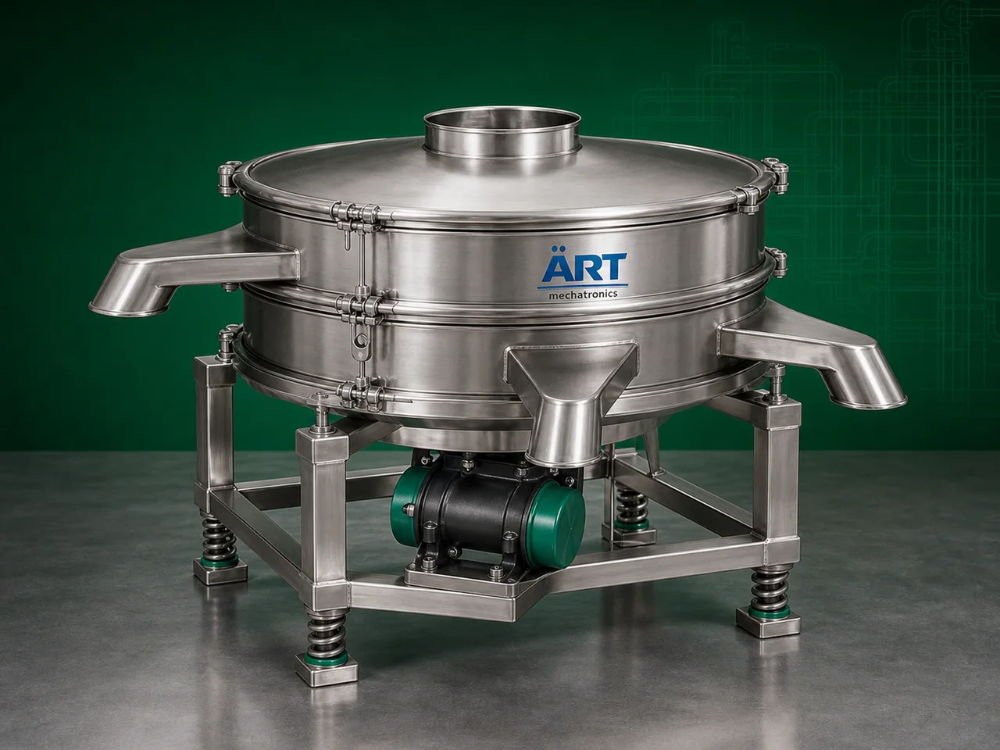

Vibro Machine (Industrial Vibrating Screening, Sieving & Separation System)
A Vibro Machine, also known as a Vibro Sifter, Vibrating Separator, or Industrial Vibro Screening Machine, is a highly efficient industrial equipment designed for screening, grading, sieving, filtering, and separation of powders, granules, particles, liquids, and bulk materials.

About the Vibro Machine
The machine uses controlled vibratory motion generated through a vibrating motor, which causes material to move across specially designed mesh screens. This enables efficient separation based on:
- Particle size
- Granule size
- Density
- Foreign impurities
Vibro machines are widely used in industries such as:
• Food processing
• Pharmaceuticals
• Chemicals
• Spices
• Agro products
• Minerals
• Ceramics
• Paints & coatings
• Recycling industries
where accurate screening, impurity removal, and particle size classification are essential.
The machine is suitable for:
- Powder sieving
- Granule grading
- Liquid filtration
- Dust separation
- Particle classification
- Impurity removal
- Multi-stage screening operations
ART Mechatronics offers high-performance vibro machines, engineered for high screening efficiency, low vibration noise, hygienic operation, and reliable industrial performance.
One machine, many names
Buyers search for this equipment under many terms — we manufacture all of them:
Working Principle of Vibro Machine
Creates efficient particle separation action
Types of Vibro Machines
- 1. Vibro Sifter Machine
Designed for:
- Powder sieving
- Fine particle separation
- Food and pharma applications
- 2. Vibrating Separator Machine
Used for:
- Bulk material separation
- Particle classification
- Continuous industrial screening
- 3. Circular Vibro Screen
Circular vibratory motion provides:
- Efficient screening
- Smooth material flow
- 4. Multi Deck Vibro Machine
Allows:
- Multi-size grading
- Simultaneous particle classification
- 5. Liquid Vibro Filter Machine
Specially designed for:
- Liquid filtration
- Slurry screening
- Wet material separation
- 6. Heavy Duty Industrial Vibro Machine
Suitable for: ✔ Large-capacity industrial processing plants
Industries Using Vibro Machine
🍃 Food Processing Industry
- Flour, spice and powder screening
💊 Pharmaceutical Industry
- Tablet powder and granule grading
⚗️ Chemical Industry
- Chemical powder separation
🌶️ Spice Industry
- Masala and seasoning sieving
🌾 Agro Industry
- Seed and grain grading
⛏️ Mineral Industry
- Mineral particle separation
🎨 Paint & Coating Industry
- Pigment and slurry filtration
Features & Advantages
- High screening and separation efficiency
- Accurate particle size classification
- Multi-deck screening capability
- Dust and impurity removal
- Continuous industrial operation
- Low maintenance requirement
- Energy-efficient performance
- Hygienic and easy-to-clean design
- Suitable for dry and wet materials
Technical Highlights
- Screening Type:
- Vibratory screening
- Circular vibration separation
- Deck Options:
- Single deck
- Double deck
- Multi deck
- Construction: Stainless Steel / Mild Steel
- Mesh Size: Customizable
- Motor Type: Vibro motor system
- Operation:
- Manual
- Semi-automatic
- Fully automatic
Turnkey Screening Solutions
ART Mechatronics offers:
- Complete vibro screening plant solutions
- Multi-stage grading systems
- Dust collection integration
- Conveying and handling integration
- Installation & commissioning
- After-sales service & AMC
Why Choose Art Mechatronics
- Expertise in industrial screening and separation systems
- Customized vibro solutions for multiple industries
- High-performance and durable machine construction
- Energy-efficient and reliable industrial designs
- Proven industrial performance across sectors
Applications
- Food Processing Plants
- Pharmaceutical Manufacturing Units
- Chemical Processing Industries
- Spice Manufacturing Facilities
- Grain & Seed Processing Units
- Mineral Processing Plants
Industries that use the Vibro Machine
Related Cleaning, Sorting & Grading machines
Get pricing & specs for the Vibro Machine
Share the product, target capacity, current process and plant location. These details help our engineers discuss the right machine or line configuration.
One partner, from design to start-up
ART Mechatronics designs, manufactures, installs and commissions your Vibro Machine solution with regional presence in India, UAE and Thailand.